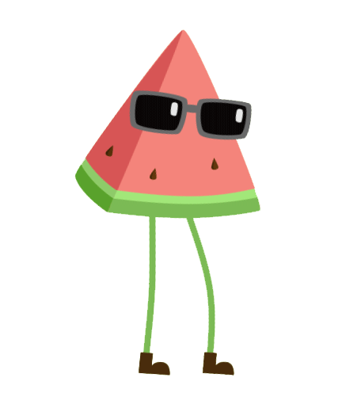
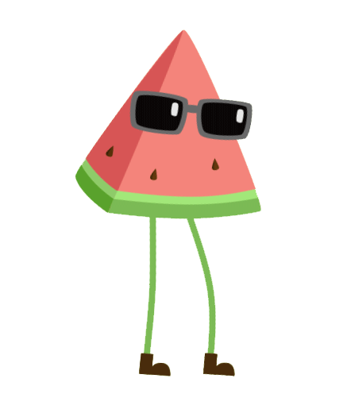

HTML/CSS
0%
0%


能够编写语义化的 HTML，模块化的 CSS，实现较复杂的布局与动画
熟悉已标准化的 HTML5 / CSS3 新特性
能够编写语义化的 HTML，模块化的 CSS，实现较复杂的布局与动画
熟悉已标准化的 HTML5 / CSS3 新特性


熟悉 ECMAScript（JavaScript），对 JavaScript 引擎及相关 JIT 技术有一定的了解
了解 ECMAScript 新标准与相关后处理工具并能在项目中使用


熟悉原生 DOM 与 BOM 的使用及相关标准（W3C / WHATWG），有桌面 / 移动端前端组件的开发经验
对 WebGL / Web Workers / WebSocket / Web Components / SVG 等 API 有一定的使用经验


 
